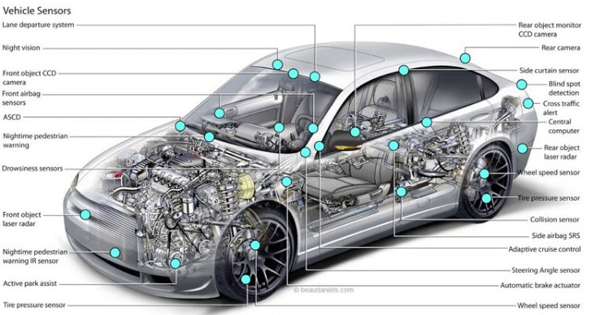
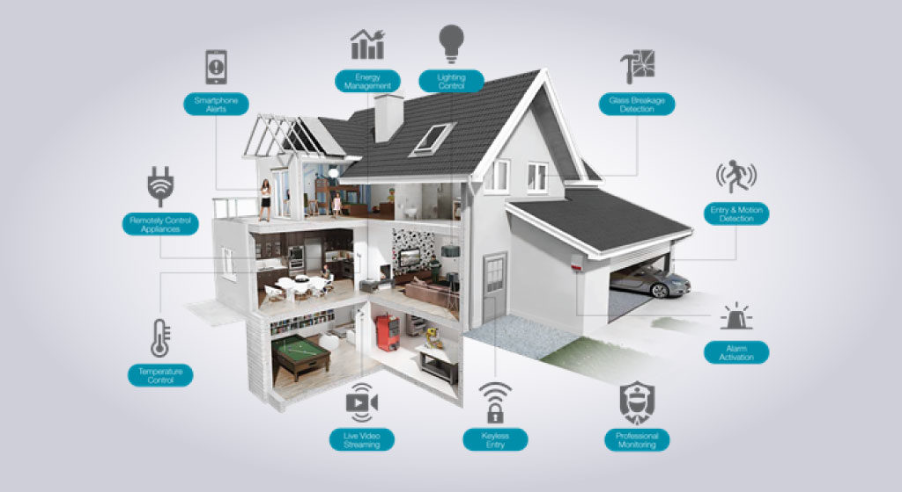

Typically, IoT helps in advanced connectivity of devices, systems, and services that goes beyond machine-to-machine (M2M) communications. IoT is mostly suitable for heart monitoring implants, biochip transponders on farm animals, electric clams in coastal waters, automobiles with built-in sensors, devices for environmental/food/pathogen monitoring or field operation devices that assist firefighters in search and rescue operations. More number of people wants to avoid troublesome situations. In the modern world people wants more luxury, So IoT is mostly used in home automation (also known as smart home devices) such as the control and automation of lighting, heating (like smart thermostat), ventilation, air conditioning (HVAC) systems, and appliances such as washer/dryers, robotic vacuums, air purifiers, ovens or refrigerators/freezers that use Wi-Fi for remote monitoring. In the future hundreds of billions of physical devices which are embedded with smart sensors will interact with one another without human involvement, on a Machine-to-Machine basis.
Transportation
The IoT can play the important role in integration of communications, control, and information processing across various transportation. Application of the IoT extends to all aspects of transportation systems (i.e. the vehicle and the driver or user). Dynamic interaction between these components of a transport system enables inter and intra vehicular communication, smart traffic control, smart parking, electronic, logistic and fleet management, vehicle control, and safety and road assistance. Modern automobiles are equipped with sensors which are connected to the internet through control systems. IoT plays important role in road safety- systems. Such as collision detection, lane change warning, traffic signal control, intelligent traffic scheduling.
Environmental Monitoring
The Environmental monitoring applications of the IoT typically use sensors to assist in environmental protection by monitoring the atmospheric situations.like monitoring the movements of wildlife and their habitats. The physical devices connected to the Internet which are used as warning systems can also be used by emergency services to provide more effective aid.
Medical and health care
IoT devices can be used to enable remote health monitoring and emergency notification systems. Some hospitals have begun implementing smart beds that can detect when they are occupied and when the patient is attempting to get up.
Home automation
Home automation is the residential extension of building automation. It involves the control and automation of lighting, heating, ventilation, air conditioning (HVAC), and security, as well as home appliances such as washer/dryers, ovens or refrigerators/freezers. They use Wi-Fi for remote monitoring and are a part of the Internet of things.
Agriculture
By develop the agriculture machinery into smart devices causes control the water pumps and sprayers are controlled anywhere.